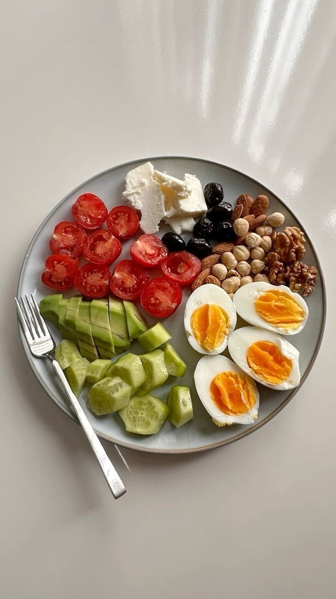

Chopping vegetables
Choosing the right knife for cuttingCut vegetables in appropriate
ways according to their type.
Use a dedicated cutting board.
Cut into even sizes

Cooking Basics
Boiled
Healthy method because it does notrequire adding fats.
Fried
It gives food a crunchy and deliciousflavour, and can be
Relatively quickly.
Grilled
Does not require large amounts of fat

الأطعمة الصحية على تلبية احتياجات
الجسم من الفيتامينات والمعادن
الوجبات الصحية
يساعد تناول مجموعة متنوعة منالأطعمة الصحية على تلبية احتياجات
الجسم من الفيتامينات والمعادن

الأطباق التقليدية
الأطباق التقليدية العربية تمثل جزءًا مهمًا من التراث الثقافيالعربي، وتتميز بتنوعها ونكهتها الغنية. تعكس هذه الأطباق
الشعوب وتقاليدهم وتساهم في الحفاظ على الهوية الثقافية.